FMP 211 :: Lecture 14 :: TOOLS FOR HORTICULTURAL CROPS – PROPAGATION TOOLS, PLANTERS AND HARVETING TOOLS AND MACHINERY

PLANT PROPAGATION
Most plants reproduce more of their kind through production of seeds. This is sexual reproduction and it involves the exchange of genetic material between two parent plants. Many ornamental plants do not come "true" from seed. To increase the numbers of these plants, gardeners and horticulturists use asexual propagation. In asexual propagation, the new plants are genetically exact copies or clones of a single parent plant. The methods used in asexual propagation range from taking leaf cuttings of African violets to grafting apple cuttings onto root stocks. Fruit tree propagation is usually carried out through asexual reproduction by grafting or budding the desired variety onto a suitable rootstock
GRAFTING is a method of asexual plant propagation widely used in agriculture and horticulture where the tissues of one plant are encouraged to fuse with those of another. It is most commonly used for the propagation of trees and shrubs grown commercially. (Grafting is limited to dicots and gymnosperms. Monocots lack the vascular cambium required). In most cases, one plant is selected for its roots, and this is called the stock or rootstock. The other plant is selected for its stems, leaves, flowers, or fruits and is called the scion. The scion contains the desired genes to be duplicated in future production by the stock/scion plant.
BUDDING is a grafting technique in which a single bud from the desired scion is used rather than an entire scion containing many buds. Most budding is done just before or during the growing season. However some species may be budded during the winter while they are dormant. Budding requires the same precautions as grafting. Be sure that the scion and rootstock are compatible, that the scion has mature buds, and that the cambia of the scion and rootstock match. Be especially careful to prevent drying or contamination of grafting materials.
TOOLS USED FOR BUDDING AND GRAFTING
1. Dibber
2. Budding and grafting knives-
3. Grafting Tools
4. Grafting Tape.
5. Pruning and Lopping Shears
DIBBER
Dibbers are used to make holes in seed bed to plant seeds, seedlings and bulbs. They are ergonomically designed consisting of a stainless steel sharp dibber and a hard wood handle joined together using a ferrule. The sharp dibber glides effortlessly into all soils. Overall length 27cm, weight 290g.
Grafting and budding knives are designed specifically for these purposes and should not be used for carving and whittling wood. Using them for other purposes will make cutting edge blunt very quickly. . Grafting and budding knives must be kept razor sharp so they will cut smoothly. They are available in either left- or right-handed models. The blade is beveled on only one side, unlike conventional knives, which have blades that bevel on both sides down to the cutting edge
Grafting knife
Grafting knife
| 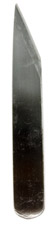 |  |
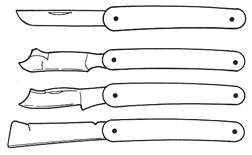 | 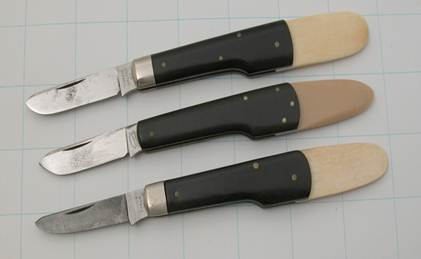 |
| Grafting blade | Grafting blade -folding | Budding knives | Budding knives |
GRAFTING TOOLS
Grafting tool is designed for making the cleft graft. It is used when the rootstock’s diameter is greater than 1 inch. The wedge-shaped blade is used to split the stock, and the flat pick opens the cleft so that the scions can be inserted. Once in place, the flat pick is removed and the cleft comes together to hold the scions in position.
| 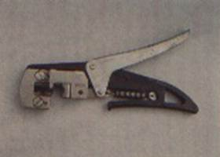 | 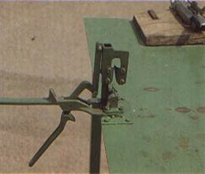 | 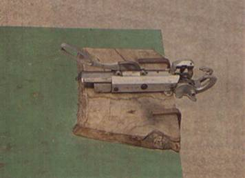 |
| Hand operated bench grafting tool- V shaped cut | Hand operated bench grafting tool - Chip and bud graft | Foot operated bench grafting tool- omega cut |
| 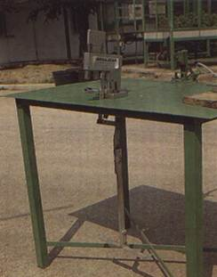 | 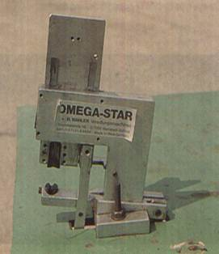 | 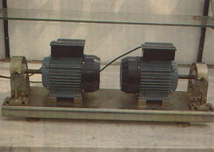 |
| Saw type electrically powered grafting machine | Omega type electricity operated grafting machine | |
| 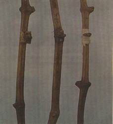 | 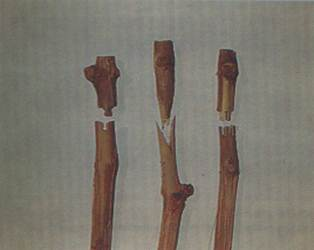 | |
| Omega, V shaped and saw type machine cuts | ||
PRUNING AND LOPPING SHEARS
Pruning and lopping shears are the scissors or sliding blade type rather than the blade and anvil type. They are used to harvest scion wood or bud sticks, As with knives, pruning and lopping shears should be kept razor sharp to give clean, close cuts
PRUNING SHEAR
Designed for those with smaller hands who may prefer a smaller, lighter pruner. It is comfortable to use yet every bit is as sturdy and powerful as other tools. Ideal for small pruning work such as grape vines, shrubs and young trees The anvil blade is screw mounted. The short blades facilitate closer cutting to the stem of the plant. Recommended Cutting Capacity up to 2 cm, length 18 cm and weight 200 gm
Pruning shear
FOLDING PRUNING SAW
It cuts branches up to 4 inches in diameter. Overall length 35 cm and blade length 15 cm. The shape of the blade is thinner at the top and thicker at the bottom - where the teeth are. This unique feature keeps only the teeth in contact with the material to be cut. This prevents clogging and binding, since the sides of the blade never come in contact with the wood.
Folding pruning saw
GRAFTING TAPE
Grafting tape is utilized as a cover/protecting bandage when using a splint for broken/cracked branches, twigs. It is also used to hold the soil and roots for the root over rock design of Bonsai styling. This product is 5/8" wide and 328 feet long, clear
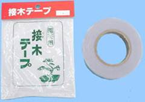
TRANSPLANTERS (FOR HORTICULTURAL CROPS)
Need for transplanting
- There are practical reasons for transplanting plants and flowers a) to coop up with season b) to coop up with time of release of water c) to raise healthy seedling in a controlled environment
- Moving homes
- Redesigning, Correcting, or Rearranging your garden
- Relocating to a better spot in your yard (more sun or shade)
- Avoiding roots from surrounding trees
- Transferring potted plants and flowers to the garden
- Alleviate crowding
Vegetable Transplanter (Video) |
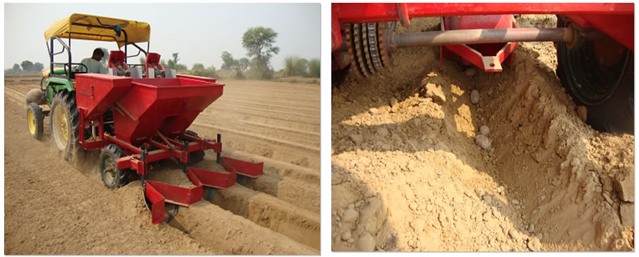 |
Potato Planter |
Relative difficulty in transplanting various vegetables
| Easy to transplant | Medium difficulty |
Difficult to transplant |
Broccoli sprouts |
Ccauliflower |
Watermelon |
Brussels |
Celery |
Muskmelon |
Cabbage |
Egg plant |
Squash |
Tomato |
Onion |
Cucumber |
Lettuce |
Pepper |
|
Tools needed for manual transplanting of horticultural crops
- Long bladed spade (sharp)
- Sharp loppers
- Small Trowel
- Rose pruners
- Bone Meal or other recommended fertilizer
- Leather gloves
- Wheelbarrow, wooden board, or plastic sheet to transport plant
- Water (two large buckets for each plant)
- Disinfecting sprays such as lime sulfur or fungicides
NURSERY STOCK VEGETABLE TRANSPLANTERS
The Mechanical Transplanters are excellent close spacing bed transplanters that work well in any soil condition. They can Plant at spacing as close as 5-8 cm in the row. Planters are available to plant 2-6 rows at a time with 15-20 cm row spacing. Float Wheel Direct Drive system provides positive plant spacing without wheel slippage Twin hydraulic cylinders with equalizer permit even lifting of the planting mechanisms during field operation and transport. Optional double disc shoe cuts trash left in the beds.
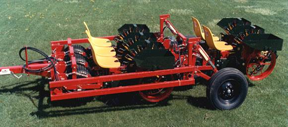
Five row nursery stock vegetable transplanters
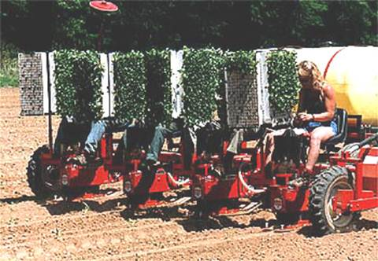
Four row nursery stock vegetable transplanters
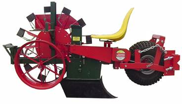
Two row vegetable transplanter
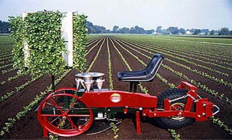
Two row nursery transplanter
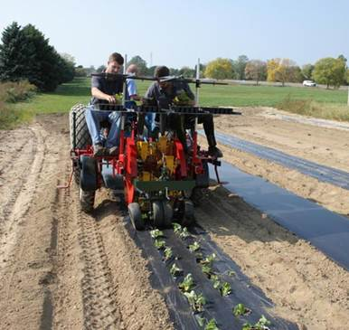
Two row nursery transplanter
TREE PLANTING
Tree planting is the process of transplanting tree seedlings generally for forestry, land reclamation, or landscaping purposes. A properly planted tree or shrub will be more tolerant of adverse conditions and require much less management than one planted incorrectly. Planting technique impacts water quality as it minimizes water, fertilizer and pesticide use.
When making decisions on planting techniques, one should consider how the plant was grown in the nursery, the plant's drainage requirements, the soil type and drainage characteristics, and the availability of irrigation water. The plant should be specifically appropriate to the site, or the site should be amended to specifically fit the plant.
Planting depth
The most important consideration in planting trees and shrubs is the planting depth. Don't plant too deep. It is better to plant in a raised manner so the roots will not drown or suffocate. Dig planting holes 2 to 3 times wider than the root ball and the same depth. Locate the root ball on solid soil and not loose backfill. Wire baskets do not need to be completely removed from large field grown trees. Cut and fold down the top half of the basket, fold back the burlap, and remove nylon strings. Be sure to remove plastic liners or synthetic burlap type materials.
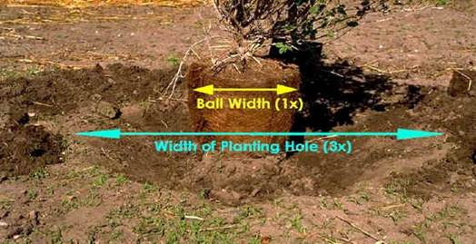
TRACTOR OPERATED POST HOLE DIGGER
Both mechanical and hydraulic drive post hole diggers are available to fit most landscaping , farming, or ranching applications. Auger drive mechanism may use either planetary drive or hydraulic drive. It consists of an auger, yoke tubing, gear box drive, power shaft, hitch frame etc. The digger is connected to tractor and moved to places where required. The drive to the gear box is obtained from PTO of the tractor. Holes of diameter 15 to 100 cm and depth 09 to 100 cm can be made by using appropriate augers.
| 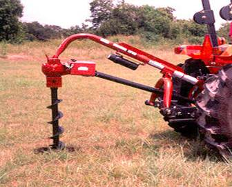 | 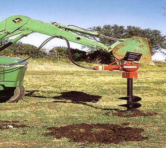 |
| Tractor operated Post hole digger- gear drive | Tractor operated Post hole digger- hydraulic drive |
ENGINE OPERATED POST HOLE DIGGER (MANUAL HANDLING)
Two man auger is powered by a 4 cycle, 5 hp engine. The auger can make holes from 5 to 20 cm in diameter and depth up to 75 cm There is an optional 45 cm extension available. It is suitable for planting large shrubs, installing fences, building decks and digging mailbox holes.
Engine operated post hole digger - manual handling
HARVESTERS
FRUIT HARVESTER- MANUAL TYPE
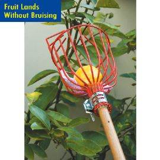
Using a fruit harvester is faster, easier and safer way to pick apples, oranges, peaches, plums and more from tree tops. Manually used fruit harvester consists of a PVC coated wire basket with finger like prongs that grasp the fruit. Padding is provided to the basket to protect fruit against bruising. The basket can be securely clamped to any length pole. The basket measures 31cm L x 15cm Diameter
Manual Fruit Harvester
CITRUS HARVESTER
Two types of mechanical harvesters are being used today for harvesting citrus
a) Continuous canopy shake system
b) Trunk shake system. Shake and catch system
Continuous canopy shake system is a self-propelled unit that shakes the tree canopy causing the fruit to fall from the tree and onto a catch frame. Trunk shake system simply shakes fruit to the ground, requiring the fruit to be picked up by a hand crew.
COMMON FEATURES FOR BOTH TYPES OF HARVESTERS
Whether self-propelled or tractor-drawn, the core unit of a continuous canopy mechanical harvesting unit consists of a series of whirls stacked horizontally. Each whirl consists of a series of approximately 6-foot-long, 1.5- to 2-inch-diameter rods mounted to the whirls, which are connected to a central drum. The rods are generally referred to as tines. The tines penetrate into the tree canopy, shaking the canopy horizontally to remove fruit.
The shake frequency of the tines can vary depending on the force needed to remove the fruit. On the OXBO MODEL, the operator of the shaker assembly can adjust the angle of the tine penetration to the angle of a hedged tree. The drum is mounted to the controlling unit so that the interaction of the harvesting tines with the canopy begins at 3 feet from the soil surface. The drum, which contains the whirls, can be elevated up to 18 feet above the soil surface. During one pass, the drum can harvest up to 18 feet of canopy height. Hedged trees insure uniformity of tree shape and allow for maximum tine penetration into the tree canopy, thereby increasing fruit removal. To minimize fruit splitting from impact with the ground or catch frame, trees should be topped to a maximum of 16 to 18 feet.
CONTINUOUS CANOPY SHAKE SYSTEM
| 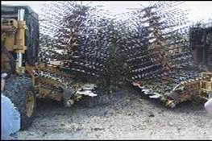 | 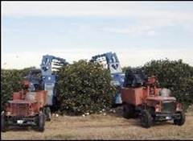 | 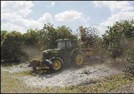 |
| Citrus harvester- self-propelled system (Oxbo make) |
Citrus harvester -self-propelled system (Korvan make) |
Citrus harvester Tractor-drawn canopy shaker (Oxbo make) |
Citrus harvester Tractor-drawn canopy shaker
SELF-PROPELLED HARVESTING UNITS- CITRUS HARVESTER
Self-propelled harvesting units work in pairs, one unit for each side of the tree. Each unit has leveling hydraulics, which allows it to work effectively in bedded groves. The paired units travel down the tree row at ground speeds that can vary from 0.5 to 1.3 miles per hour, thus allowing 200 to 400 trees per hour to be harvested. Each unit catches and separates the fruit from leaves and stems, reducing the amount of trash delivered to the processing plant. Fruit can be conveyed directly to a goat-type truck, or up to 60 boxes can be temporarily stored on the OXBO harvester's deck to allow for continuous operation. The goat-type trucks are similar to a conventional harvesting goat but slightly larger with a capacity of between 130 and 150 boxes. These units transport the fruit to semi trailers, which deliver the fruit to the processing plants.
For maximum efficiency, the self-propelled shake and catch units are best suited for groves with uniform tree canopy size. Canopy uniformity can be facilitated by hedging and topping. Trunk alignment in the row, clear trunk height of 18 inches to the first branches, and long tree row length improve harvesting efficiency. Skirting height of 30 inches above the ground allows for the catch frame to easily travel under the tree canopy, minimizing lower limb damage and maximizing fruit recovery. Tree topping height should not exceed 16 to 18 feet and trees should have a canopy width from the tree trunk to the outer canopy of 6.5 to 8 feet.
Some hand labor may be required to glean any fruit remaining in the tree or to retrieve fallen fruit that missed the catch frame. Under grove conditions outlined above, continuous shake and catch systems typically deliver 90 to 95% of the available fruit to the semi trailer. With gleaning crews, total fruit recovery approaches 98%. In cases where fruit prices are low, hand labor to glean fruit may not be economical.
A self-propelled continuous canopy shake and catch system uses a crew of six workers - 2 harvester operators and 4 goat drivers. Overall, harvest labor productivity improves from 5 to 10 times over a hand crew, depending on grove conditions and equipment downtime.
For groves that lack tree size uniformity and have not been skirted, the tractor-drawn continuous canopy shaker provides an option with greater flexibility for the adoption of mechanical harvesting systems. This tractor-drawn system works in a similar fashion to the canopy shake and catch units but without the catch frame. Tines mounted in the whirl remove the fruit from the tree by a horizontal shaking action, allowing the fruit to fall to the ground. As with the self-propelled unit, the operator can adjust the tilt and elevation of the drum that contains the series of stacked whirls. Harvesting area is limited to the height of 18 feet. With an experienced operator and in trees less than 18 feet in height, 95% of the crop can be removed from the tree.
THE TRACTOR-DRAWN CANOPY SHAKE SYSTEM- CITRUS HARVESTER
The tractor-drawn canopy shake system must work in conjunction with a hand crew to gather fruit shaken off by the harvesting unit. The harvester can travel between one-half and one mile per hour and have the capacity to harvest between 100 and 200 trees per hour. The efficiency of this harvester is influenced by the size of the pickup crew. Typically, a harvester shakes only the number of trees that will provide the fruit that can be picked up within a day.
The pick up crew gathers fruit into 8- or 10-box tubs, which are then loaded into conventional high lift trucks or goats. Since hand crews glean most of the remaining tree fruit, the tractor-drawn canopy shaker system in conjunction with hand labor delivers up to 99% of the available crop. When the tractor-drawn canopy shaker is used, labor harvest efficiencies as compared to standard hand harvesting are improved by at least twofold.
As with the shake and catch systems, trees should be hedged with a canopy width from the trunk of the tree to the outer skirt of no more than 8 feet. Trees should be topped to a height of no more than 18 feet. Multi-stemmed tree trunks or low hanging branches do not decrease harvesting efficiency as significantly as they do when the catch frame systems are utilized.
Harvesting and roadside costs in the 2003-04 season for continuous canopy shake systems can range from $1.00 to $1.75 per weight box. The lower cost range reflects well-prepared, high-yielding trees that are harvested with a catch frame, and does not include the cost of a gleaning crew to collect non-harvested fruit. The cost per box of the tractor-drawn system typically is higher due to the additional labor requirements to gather the fruit from the ground. Actual harvesting costs will depend on specific grove conditions and gleaning requirements of the grower.
Higher-yielding blocks should enjoy a lower per-box cost of mechanical harvesting. Larger blocks or tracts in close proximity should command a lower price, since the harvesting equipment can work more efficiently for a longer sustained period of time. Whatever the price of a mechanical system, the relative comparison a grower needs to consider is the price a hand crew would charge to pick and roadside the same volume of fruit.
For the Florida citrus grower to remain competitive in a global environment, all options that reduce the harvesting costs must be considered. Mechanical harvesting for processed citrus fruit is a viable option to lower harvesting cost. Ongoing research conducted by the Florida Department of Citrus, the University of Florida, and private companies show that the above systems can reduce harvesting costs by 20 to 40 cents per box. Additionally, studies that have been conducted for multiple years have shown no adverse effects in tree health, productivity, or tree longevity where these systems have been used.
TRACTOR OPERATED TURMERIC HARVESTER
The unit consists of a blade with five bar points for easy penetration into the soil, a main frame and a hitch frame.. The blade is fixed at an inclination of 20° to a cultivator frame with straight tynes at both ends for easy penetration in to the soil. It can be hitched to the tractor at the hitch frame. For digging of turmeric, the blade with bar points penetrate into the soil, lift the turmeric rhizomes along with the soil and convey them to the lift rods which aids in separation of the rhizomes from the soil. The soil slip back to the ground and the dug out rhizomes deposited at the centre of the unit. The field capacity of the unit is 1.6 ha per day. The salient features of the unit are:
- Results in 70 per cent saving in cost and 90 per cent in time when compared to manual digging.
- Extent of damage caused to the rhizomes is very much less (2.83 per cent)
- The un dug rhizomes left in the field is minimum (2.42 percent)
| 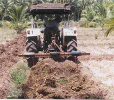 | 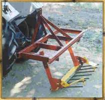 |
| Turmeric harvester | |
POWER TILLER OPERATED POTATO DIGGER
Potato is being grown in the hilly regions. For harvesting potatoes, mechanization or improved implement has to be introduced to complete the harvest economically and in time. Because of ease of maneuverability of power tiller in hilly tracts, a potato digger attachment to power tiller is developed. The unit consists of a shank, a triangular shape ridger with a share and extension rods and a hitch frame. The share penetrates into the soil and the ridger bottom dig out potato along with the soil. When the harvested mass moves over the extension rods, the soil slips back to the ground and the partly cleaned potatoes deposit on the soil. The depth can be adjusted to set the depth up to 30 cm. The field capacity is 0.4 ha/day.
The salient features of the unit are:
- Digging with power tiller drawn potato digger results in 47.7 per cent of saving in cost and 68.0 per cent of saving in time when compared to manual digging
| Download this lecture as PDF here |